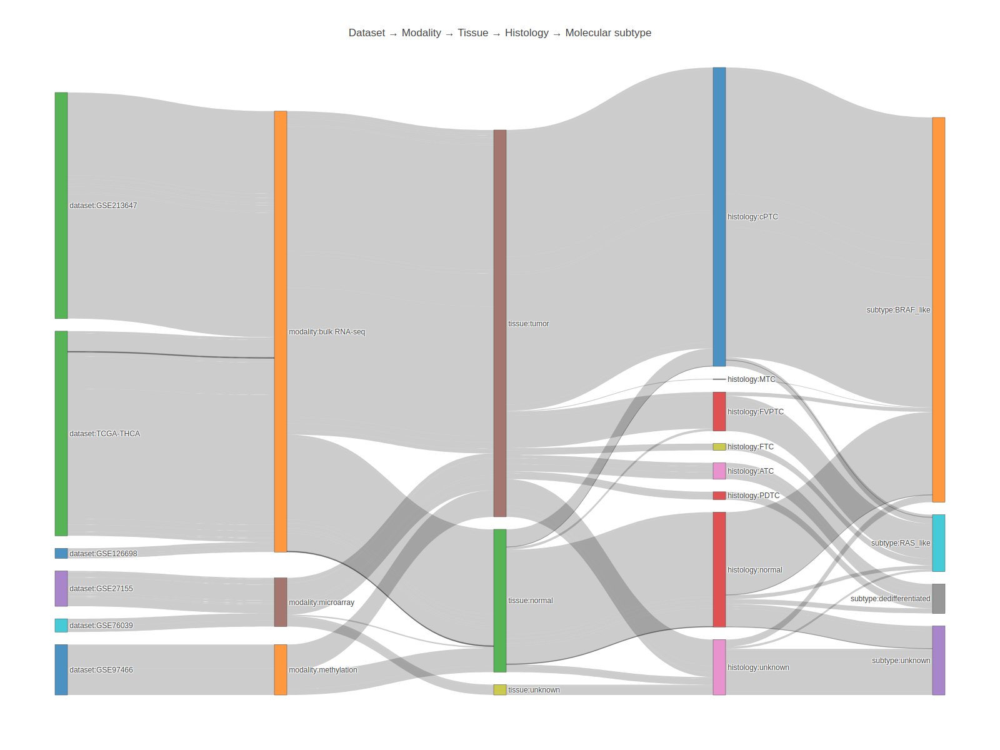
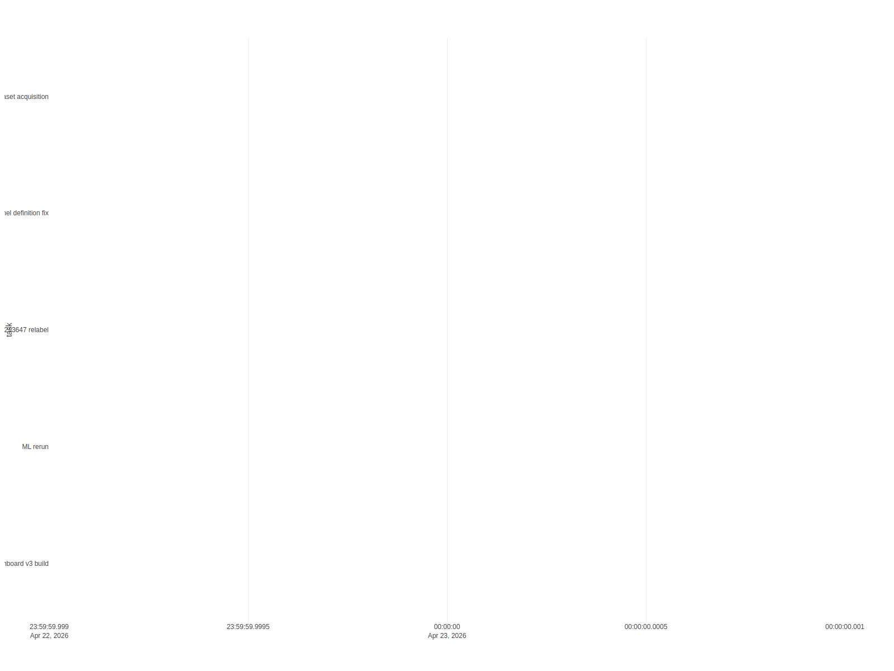

01 / OVERVIEW
연구 개요 | THCA Multi-Omics Dashboard
연구 설계, 샘플 플로우, 데이터 흐름을 한 장에 정리합니다.
SankeyTimelineCONSORT
핵심 구조
THCA와 BRAF/RAS 축을 30초에 이해하기
연구 개요와 핵심 구조
왜 이 연구를 하는가
- THCA(Thyroid Carcinoma, 갑상선암)는 상당수가 PTC(Papillary Thyroid Carcinoma)로, 임상적으로 BRAF-like와 RAS-like 두 분자 subtype으로 크게 갈립니다.
- BRAF-like와 RAS-like는 예후·치료 반응·dedifferentiation 위험이 다르기 때문에 어느 쪽인지를 빠르고 저렴하게 판단하는 것이 임상 가치가 있습니다.
molecular subtype이 뭔가
- 형태(histology)만으로는 구분이 어려운 환자들을 유전자 발현 패턴으로 분류한 라벨입니다.
- TCGA-THCA 논문(2014, Cell)에서 제안된
BRS(BRAF-RAS Score)축이 사실상 산업 표준입니다.
이 대시보드가 답하는 질문
- 공개 데이터만으로 BRAF-like vs RAS-like 분류가 가능한가?
- 16~112개 유전자 정도의 compact panel이면 충분한가, 아니면 전체 전사체가 필요한가?
- 내부(TCGA) 성능이 외부(GEO) 코호트에서 재현되는가?
이번 배포에서 실제로 쓰인 open-access 세트는 7개이고, 전체 샘플은 1,509개입니다. bulk RNA-seq과 microarray는 의도적으로 섞지 않았고, methylation은 QC 전용 exploratory layer로 분리했습니다.
총 샘플
1,509
sample_master 기준
사용 데이터셋
7
A 등급 5개, B 등급 2개
가장 많은 코호트
632
GSE213647
주된 분석축
BRAF/RAS
TCGA-THCA internal CV backbone

overview sankey
페이지 안에서는 PNG preview를 기본으로 먼저 보여주고, 아래 접힘 패널에서 Plotly 인터랙티브 버전을 바로 확대해서 볼 수 있습니다.

overview timeline
페이지 안에서는 PNG preview를 기본으로 먼저 보여주고, 아래 접힘 패널에서 Plotly 인터랙티브 버전을 바로 확대해서 볼 수 있습니다.
이 페이지에서 확인할 것
어떤 순서로 대시보드를 둘러볼지
이 페이지에서 확인할 것
권장 읽기 순서
- 먼저 이 개요 페이지에서 샘플 수/데이터 출처/주된 축을 확인합니다.
02 데이터셋에서 각 코호트의 플랫폼(RNA-seq vs microarray)과 샘플 크기를 확인합니다.03 샘플에서 BRAF_like 1,075 / RAS_like 159 / dedifferentiated 82가 어떻게 나뉘었는지 봅니다.04 패널→07 ML→08 패널 비교로 모델 성능을 확인합니다.
용어 미리보기
- cPTC: classical PTC (가장 흔한 유두암 아형)
- FVPTC: follicular variant PTC (여포성 변종, RAS-like에 가까움)
- FTC/ATC/PDTC/MTC: 여포암/미분화/저분화/수질성 (각각 드물지만 임상적으로 중요)
주의할 점
- mutation anchor(예: BRAF V600E 검출)는 보조 컬럼이며 최종 라벨은 histology + molecular annotation 일치 시에만 확정합니다.
해석 가이드
- 샘플 분포는 cPTC 1,066, normal 58, FVPTC 109 중심입니다.
- molecular subtype은 BRAF_like 1,075, RAS_like 159, dedifferentiated 82로 정리했습니다.
- mutation anchor는 보조 컬럼으로만 사용했고, 최종 phenotype 확정은 histology/molecular annotation과 일치할 때만 유지했습니다.
- MTC는 follicular-derived thyroid cancer와 혼합하지 않도록 sample_master에서 별도 subtype으로 보존했습니다.